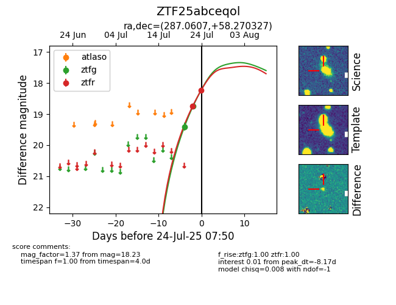

Target ZTF25abceqol at 2025-07-24 07:50, see:
FINK: fink-portal.org/ZTF25abceqol
Lasair: lasair-ztf.lsst.ac.uk/objects/ZTF25abceqol
ALeRCE: alerce.online/object/ZTF25abceqol
alt names
ZTF25abceqol (ztf,fink)
coordinates:
equatorial (ra, dec) = (287.0607,+58.27033)
galactic (l, b) = (88.8270,+20.70415)
photometry
last ztfg=18.74, ztfr=18.23
2 ztfg, 2 ztfr detections
